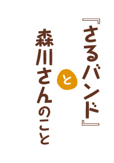
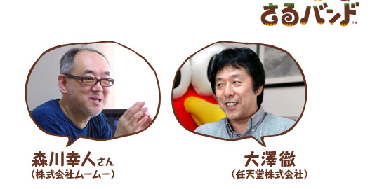

歌詞を自動的に作ってもらうときに、いくつかのテーマが用意されています。
テーマは幅広くしなきゃいけないんですけど、最終的には僕の好みで選びました（笑）。
歌詞の元になるテキストは文章の形ではなくて、単語だけが入っているんです。
ソフトに自動で作ってもらうと思いがけない言葉の組み合わせが生まれますね。
よくある自動生成モノって、文章の一部に穴が空いていて、そこにランダムに言葉を入れていくだけで、意味が通らないものが多いんです。そうはしたくなかったし、かといって雛形があって常に意味がカッチリ決まっていて、申し訳程度に穴が開いているというのも興ざめですし。
『さるバンド』ではプレイの自由度の高さを維持しつつ、意味が通るバランスをとってアルゴリズム※1を作っているんです。この調整が大変でした。
※1
アルゴリズム…コンピュータを使って何かをする手順のこと。
どんな歌詞を入れても、歌える歌になるのが不思議です。
歌詞を先に作りたい人と、音楽を先に作りたい人とがいると思うんですが、今回はそのどちらのリクエストも受けられるようにしています。
普通は音楽に合わせて歌詞の言葉の数があらかじめ決まるんですが、自分で自由に入力した単語でも音楽の長さが合うようにしたんです。そこは、ほかの自動生成の音楽ツールと比べてもオリジナリティが高い部分だと思います。
もちろん、メロディもその度に生成しています。しかも、ひとつの音にひとつの言葉という単純なやり方ではなく、言葉のイントネーションにも合わせたメロディになるようになっています。
いつも音楽をお願いしているマニュアル・オブ・エラーズ・アーティスツの山口優さん、永田太郎さん、谷口尚久さんとの作業だったんですが、こういった形で音楽に冗長性を保つ（=どんな歌詞にも対応できるようにする）というのは、あまり前例がないというか、専門の方でもやったことがないらしくて大変でしたね。
文字数とメロディの音符の数が必ず同じというわけではないんですね。
そうですね。やっぱりそれだとつまらないんで。
開発が終了したあとに、音楽担当のみなさんとも打ち上げをやったんですが、僕らからのリクエストは音楽的には無茶苦茶なことだったらしいです（笑）。音楽の方の専門的な理論と僕らの論法とをすり合わせていくのが大変だったみたいで。
プレイされる方の中には音楽に詳しくない人もいますし、そういう方でもでもわかるようにしなくちゃいけないですし。
音楽も作っていただいたもの全体から実際に採用されたのは3分の2くらいになってますね。やはり言葉でイメージが伝わりやすい「ポップス」とか「歌謡曲」とか「ボサノバ」とかにしぼりこんでいって。
開発中はいろんなジャンルが出てきてましたよね。逆に、「ああいう曲はこういう風に言うんだ」とか勉強になりましたね。
「インド・ロック」とか（笑）。
「レトロ・グルーヴ」とか、どういう音楽か知らなければわからないですしね。
ずっと曲を作っていくと、少しずつ使えるアレンジが増えるようになっていますね。
是非たくさんプレイしてください。
テーマやアレンジなどで森川さんのおすすめはありますか？
ムード歌謡とか、歌詞とのギャップが出やすくていいですよ。「せつない戦国のムード歌謡」とか（笑）。そういう組み合わせの妙をみなさんで見つけてほしいんです。そのために、ちょっと極端に振ったテーマも意図的に残しています。
武将の名前など、歴史上の人物や架空の人物の名前で曲を作るのも面白そうですね。
今流行の「歴女」な方には、是非そういう楽しみ方をしていただきたいですね。
時事ネタだったり、身近な学校の先生の名前だったり。
そうしていただけると、作り手冥利につきますね。